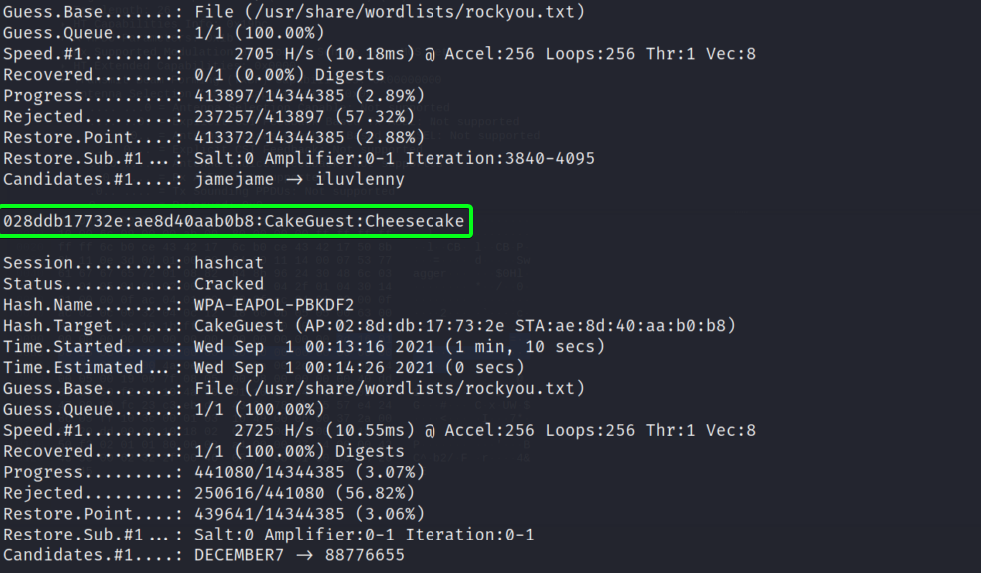

Conseguir credenciales del File CakeGuest_028ddb17732e
Algo obligatorio en este CTF era hacer uso de hashcat para poder desifrar la password de del WIFI, por lo tanto si tenemos un poco de exp, sabemos que hashcat no trabaja con archivos PCAPS como los que nos proporcionaron, así que debemos buscar algún método para convertir este PCAP, en un formato complatible con hashcat.
Cambiando formato
Con un poco de búsqueda en internet encontramos una forma, y es que descargándonos el repositorio de hashcat-utils, podemos hacer uso de un binario que nos permite hacer la conversión que queremos. Nos clonamos el repositorio con el siguiente comando.
git clone https://github.com/hashcat/hashcat-utils
Descargado el repositorio, accederemos a un dir llamado src, estado ahí podremos observar un binario llamado cap2hccapx, es el que nos ayudará a cumplir nuestro cometido. Solo tendremos que insertar el siguiente comando estando en el dir donde se encuentra el .bin.
./cap2hccpax.bin [file.pcap] [convertido.hccapx]

Veremos que obtuvimos el archivo convertido e incluso nos dice que el file contiene 2 WPA Handshake, muy bien !!!
Question
Ahora nos viene la pregunta ¿Qué sigue?, crackear el file obtenido..., correcto !!!
Insertando el siguiente comando haciendo uso de hashcat obtendremos nuestro resultado deseado.
hashcat -m 2500 [file.hccapx] /usr/share/wordlist/rockyou.txt
En el comando vemos que estamos haciendo uso del módulo 2500 de hashcat este módulo su nombre es WPA-EAPOL-PBKDF2, específicamente para crackear este tipo de protocolos de red, luego le pasamos el file que convertimos y por último le pasamos el wordlist que vamos a usar para crackear. Después de esperar un buen rato (esto va a depender de los recursos de tu PC), obtenemos el resultado.

Lo logramos :)